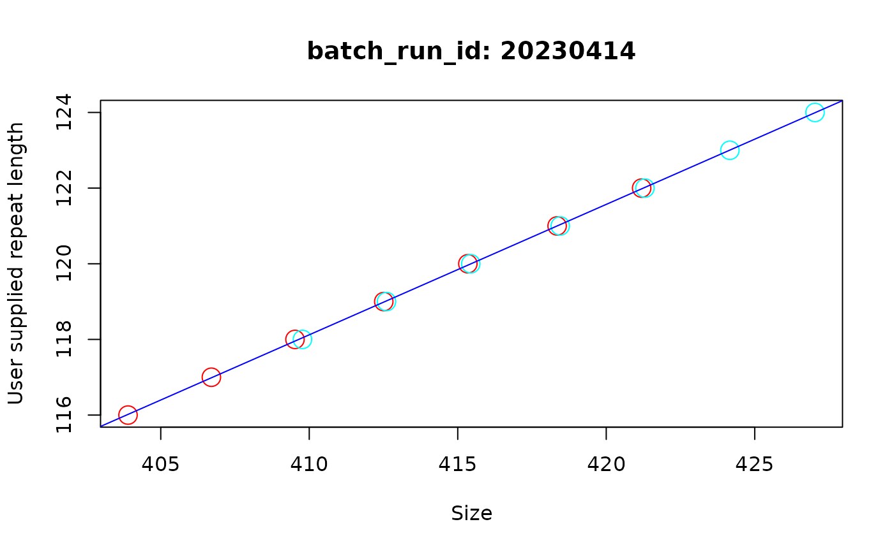

Plot Repeat Correction Model
plot_repeat_correction_model.RdPlots the results of the repeat correction model for a list of fragments.
Arguments
- fragments_list
A list of fragments_repeats class objects obtained from the 'call_repeats' function when the 'repeat_length_correction' was either 'from_metadata' or 'from_genemapper'.
- batch_run_id_subset
A character vector for a subset of batch_sample_id to plot. Or alternatively supply a number to select batch sample by position in alphabetical order.
- n_facet_col
A numeric value indicating the number of columns for faceting in the plot.
Examples
fsa_list <- lapply(cell_line_fsa_list[91:94], function(x) x$clone())
find_ladders(fsa_list, show_progress_bar = FALSE)
fragments_list <- find_fragments(fsa_list, min_bp_size = 300)
test_alleles <- find_alleles(
fragments_list
)
add_metadata(
fragments_list,
metadata
)
#> Warning: The following unique ids in the metadata file do not have a corresponding sample: 20230413_A01.fsa, 20230413_A02.fsa, 20230413_A03.fsa, 20230413_A04.fsa, 20230413_A05.fsa, 20230413_A06.fsa, 20230413_A07.fsa, 20230413_A08.fsa, 20230413_A09.fsa, 20230413_A10.fsa, 20230413_A11.fsa, 20230413_A12.fsa, 20230413_B01.fsa, 20230413_B02.fsa, 20230413_B03.fsa, 20230413_B04.fsa, 20230413_B05.fsa, 20230413_B06.fsa, 20230413_B07.fsa, 20230413_B08.fsa, 20230413_B09.fsa, 20230413_B10.fsa, 20230413_B11.fsa, 20230413_B12.fsa, 20230413_C01.fsa, 20230413_C02.fsa, 20230413_C03.fsa, 20230413_C04.fsa, 20230413_C05.fsa, 20230413_C06.fsa, 20230413_C07.fsa, 20230413_C08.fsa, 20230413_C09.fsa, 20230413_C10.fsa, 20230413_C11.fsa, 20230413_C12.fsa, 20230413_D01.fsa, 20230413_D02.fsa, 20230413_D03.fsa, 20230413_D04.fsa, 20230413_D05.fsa, 20230413_D06.fsa, 20230413_D07.fsa, 20230413_D08.fsa, 20230413_D09.fsa, 20230413_D10.fsa, 20230413_D11.fsa, 20230413_D12.fsa, 20230413_E01.fsa, 20230413_E02.fsa, 20230413_E03.fsa, 20230413_E04.fsa, 20230413_E05.fsa, 20230413_E06.fsa, 20230413_E07.fsa, 20230413_E08.fsa, 20230413_E09.fsa, 20230413_E10.fsa, 20230413_E11.fsa, 20230413_E12.fsa, 20230413_F01.fsa, 20230413_F02.fsa, 20230413_F03.fsa, 20230413_F04.fsa, 20230413_F05.fsa, 20230413_F06.fsa, 20230413_F07.fsa, 20230413_F08.fsa, 20230413_F09.fsa, 20230413_F10.fsa, 20230413_F11.fsa, 20230413_F12.fsa, 20230413_G01.fsa, 20230413_G02.fsa, 20230413_G03.fsa, 20230413_G04.fsa, 20230413_G05.fsa, 20230413_G06.fsa, 20230413_G07.fsa, 20230413_G08.fsa, 20230413_G09.fsa, 20230413_G10.fsa, 20230413_G11.fsa, 20230413_G12.fsa, 20230413_H01.fsa, 20230413_H02.fsa, 20230413_H03.fsa, 20230413_H04.fsa, 20230413_H05.fsa, 20230413_H06.fsa
call_repeats(
fragments_list = fragments_list,
correction = "repeat"
)
#> Repeat correction model: 4 samples used to build model
#> Repeat correction model: 2.89 bp increase per repeat
# traces of bp size shows traces at different sizes
plot_repeat_correction_model(
fragments_list,
batch_run_id_subset = "20230414"
)
